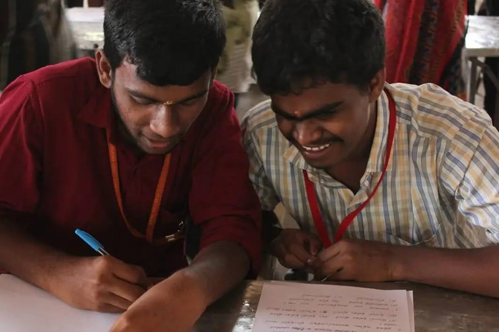
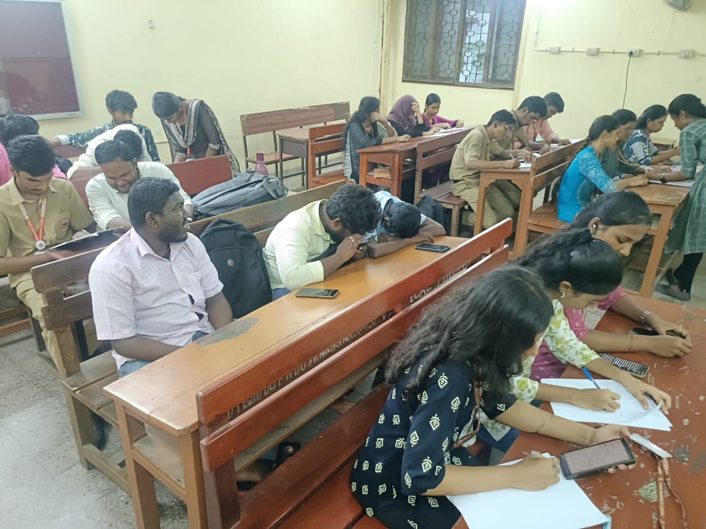
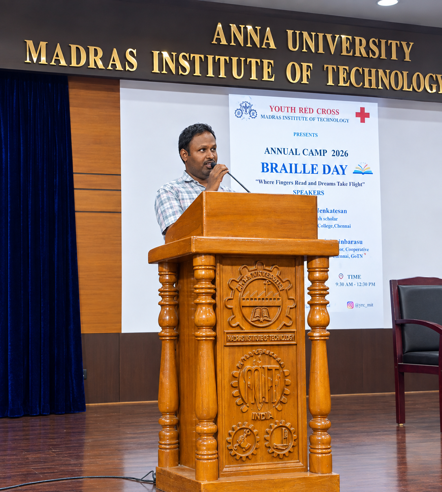
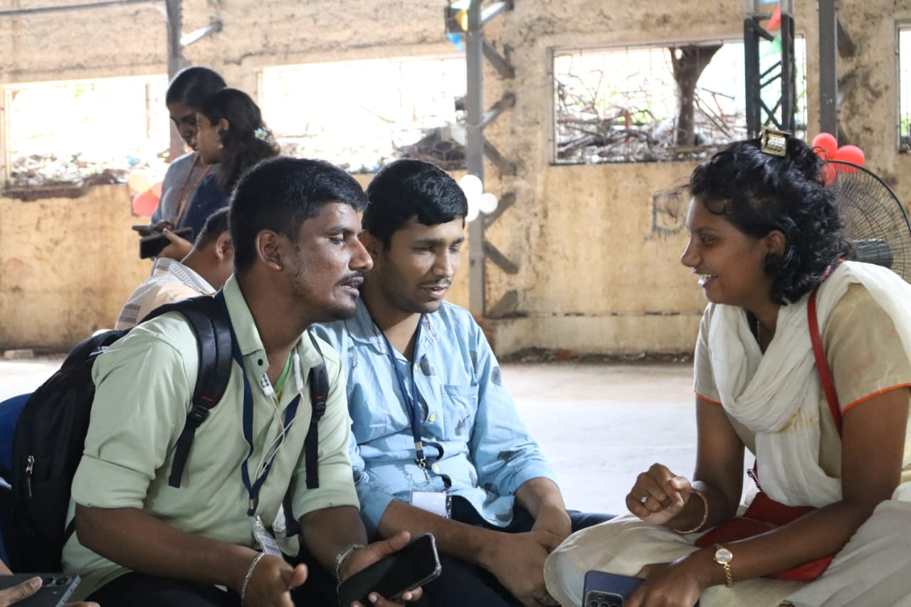
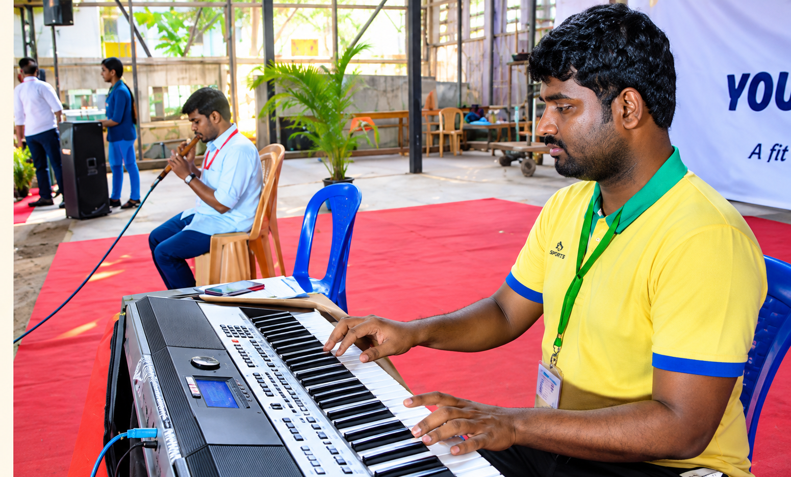
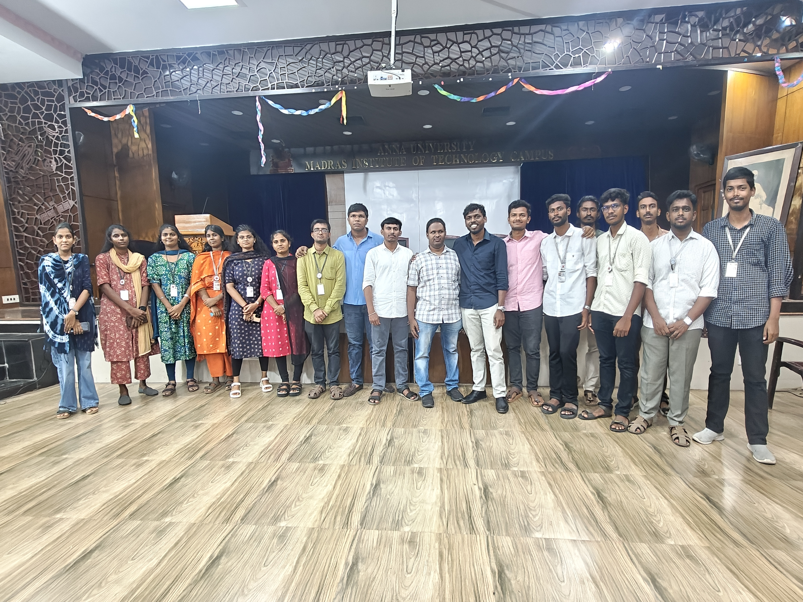
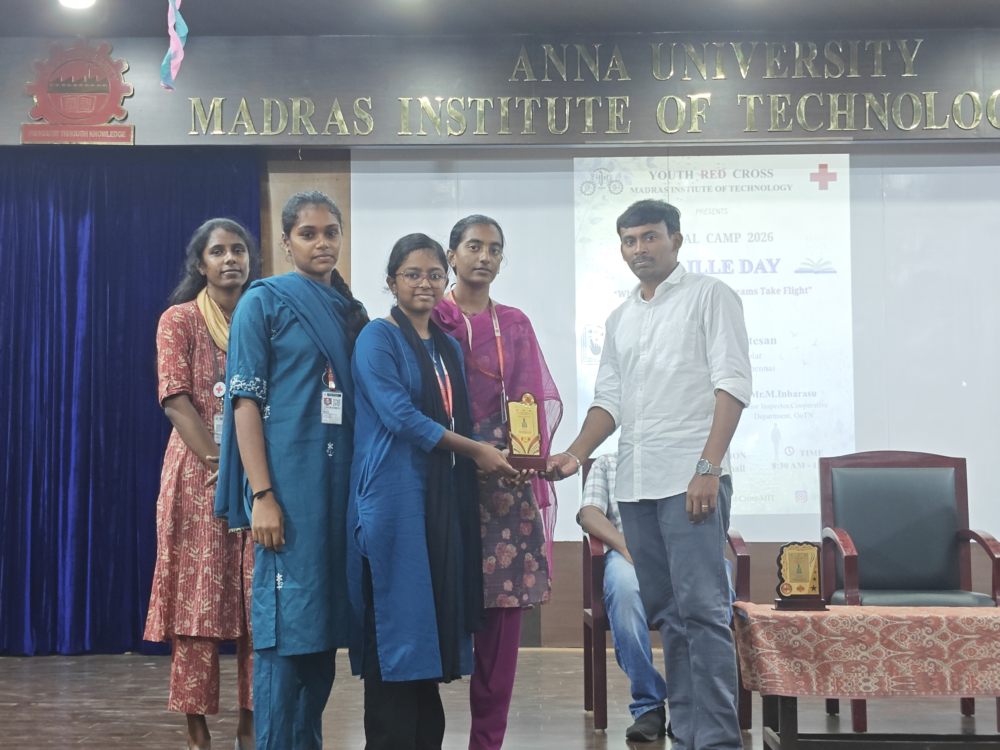
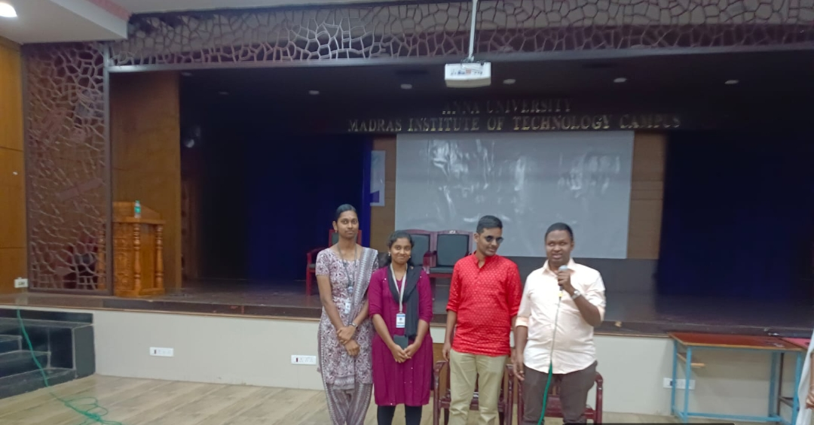
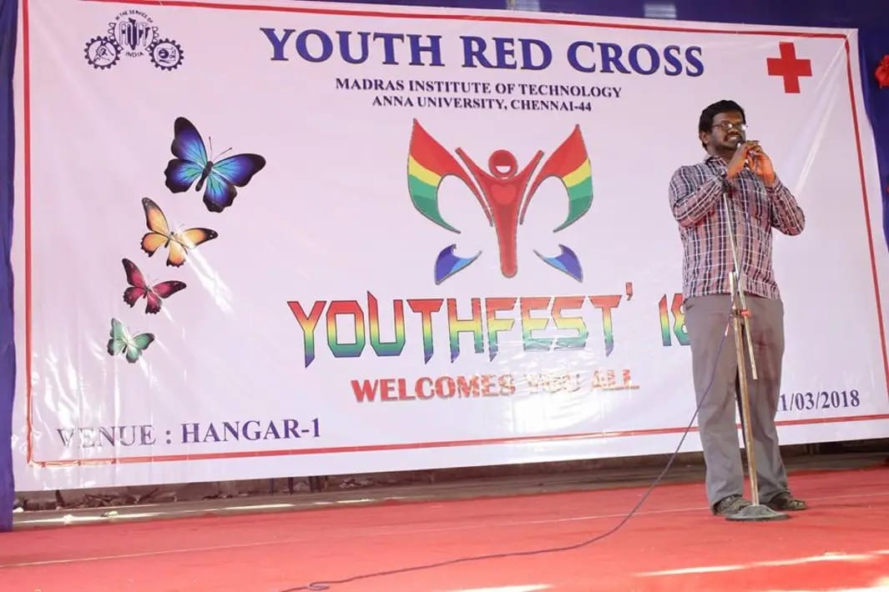

VISION TEAM
Supporting visually challenged students through service, assistance, and meaningful opportunities.
About the Vision Team
Creating an inclusive world through service.

Every step you take opens a path for someone else.
The Vision Team of YRC, MIT supports and empowers visually challenged students, helping them pursue education, build skills and take part in campus life with confidence and dignity.
Through dedicated volunteers, the team provides academic assistance, scribe support, digital assistance, examination support and career guidance based on individual requirements.
Barriers in accessibility can make education and opportunity harder to reach — not a lack of potential. Timely, dedicated support helps reduce those barriers and move people closer to their goals.
Vision
Reading Centre
SERVICE
Functioning under the Youth Red Cross at Madras Institute of Technology, the Vision Reading Centre supports visually challenged students through dedicated volunteer service and educational assistance.
VISION COMPANIONS
A long-standing initiative focused on providing meaningful support to visually challenged students in their educational journey.
“Service becomes meaningful when it creates an opportunity for someone else.”

HOW WE SUPPORT
Support That Makes a Difference
Dedicated volunteer support that helps visually challenged students learn, participate and move forward with confidence.Academic Support
Assistance with reading books, study materials, homework, notes, assignments and other educational requirements.
Scribe Support
Volunteers assist visually challenged students as scribes during examinations and academic assessments.
Online Services
Support for online applications, scholarship and examination registration, and other digital documentation.
Exams & Career Support
Guidance for TNPSC, UPSC, SSC, TRB, RRB, Banking and other competitive examinations.
Vision Companions
A long-standing YRC MIT initiative connecting volunteers with visually challenged individuals who need academic, digital and everyday assistance — and a meaningful way for students to give their time to social service.
OUR IMPACT
Small Support.
Meaningful Impact.
Creating opportunities for visually challenged students
through consistent volunteer service and support.
Years of Service
The Vision Reading Centre has been functioning for more than 21 years under Youth Red Cross at MIT.
Educational Support
Supporting visually challenged students in pursuing their educational goals through reading, writing and academic assistance.
Volunteer Service
Dedicated student volunteers contribute their time and skills to provide meaningful assistance when it is needed.
Greater Opportunities
Helping reduce accessibility barriers and creating opportunities for students to participate and move forward.
AWARENESS & INCLUSION
Braille:
Reading Beyond Sight
Braille is more than a system of raised dots—it is a powerful tool that opens the door to education, communication, and independence for people who are visually impaired.
By allowing words and numbers to be read through touch, Braille makes knowledge more accessible and empowers individuals to learn, express themselves, and participate confidently in society.
Celebrating Braille Day
As part of our commitment to creating awareness and promoting inclusivity, the Youth Red Cross organized a Braille Day awareness programme to introduce students to the importance of Braille and the experiences of people with visual impairments.
The programme provided an opportunity to understand how Braille works, why accessible education matters, and how small steps towards awareness can help build a more inclusive community.
Through interactive activities and learning experiences, participants were encouraged to look beyond limitations and recognize the importance of equal access to education and information.
“Every dot carries a message. Every word opens a door.”
Through initiatives like these, YRC continues to encourage empathy, awareness, and meaningful action towards a more accessible and inclusive society.

BRAILLE DAY · GALLERY
Moments of awareness.
A glimpse into our Braille Day awareness programme and the experiences shared through learning and inclusion.





Small actions.
Meaningful impact.
The Vision Team continues its journey through the time and effort of students who believe everyone deserves equal opportunity.
Volunteer
Share your time and skills to support visually challenged individuals with academic and everyday needs.
Include
Help build an environment where accessibility and participation are part of everyday campus life.
Make an Impact
Every small act of support becomes a meaningful step towards someone's confidence and independence.
Continuing a legacy of volunteerism, accessibility and community support.
YouthFest
YouthFest is a long-standing YRC MIT initiative that provides visually impaired students with a supportive platform to showcase their talents beyond academics.
The event brings students together through technical, non-technical, cultural and artistic activities, encouraging participation, confidence and friendship.

Together, We Make a Difference.
Through service, inclusion and friendship, the Vision Team continues to create meaningful opportunities and make a difference in the lives of others.
Join Us
Be part of the Vision Team and help create a more inclusive and supportive community.
Vision COMPANIONS Services
Supporting visually challenged students through academic assistance, scribe support and volunteer service.